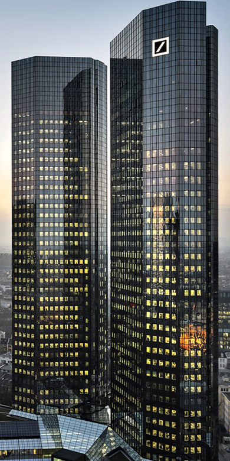
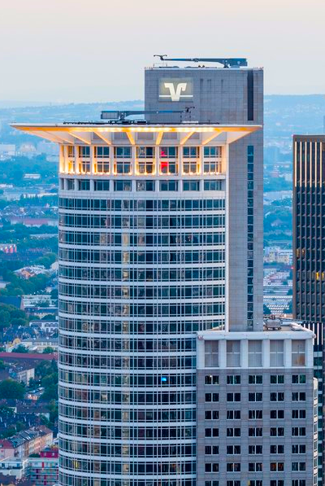
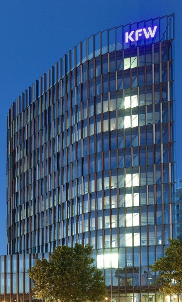

Als Frankfurter Bankenviertel wird ein innerstädtisches Gebiet von Frankfurt am Main bezeichnet, in dem eine Vielzahl von Banken, Versicherungen und anderen Finanzinstitutionen ansässig ist.
Das Bankenviertel ist kein eigenständiger Stadtteil und hat daher auch keine festgelegten Grenzen.
Im Allgemeinen werden Teile der westlichen Innenstadt, des östlichen Bahnhofsviertels und des südlichen Westends dem Bankenviertel zugerechnet.
Hier stehen die meisten Hochhäuser der Stadt und hier liegt auch der Sitz mehrerer deutscher Großbanken
(Deutsche Bank, Commerzbank, DZ Bank, Landesbank Hessen-Thüringen) sowie die Repräsentanzen zahlreicher Auslandsinstitute.
Die Geschichte des Finanzplatzes Frankfurt reicht bis in das Mittelalter.
Die Geschichte des Frankfurter Bankenviertels in der heutigen Form begann aber erst nach dem Zweiten Weltkrieg.
In Frankfurt nahm 1947 der Wirtschaftsrat des Vereinigten Wirtschaftsgebietes der Bizone seinen Sitz im Gebäude der Frankfurter Wertpapierbörse.
Am 1. März 1948 wurde die Bank deutscher Länder gegründet.
Sie wurde de facto zum Nachfolger der Reichsbank und hatte ihren Sitz im Gebäude der ehemaligen Reichsbankhauptstelle in der Taunusanlage.
1957 wurde sie zur Deutschen Bundesbank.
Seit den 1970er Jahren entwickelte sich das Bankenviertel zum am höchsten verdichteten Stadtraum des Rhein-Main-Gebiets.
Viele der den Banken zugehörigen Gebäude finden sich zudem unter anderem in der Frankfurter Skyline wieder.
| Rang in der Liste der deutschen Banken | Name der Bank | Zugehöriges Gebäude in Frankfurt |
|---|---|---|
| 1 | Deutsche Bank |  |
| 2 | DZ Bank |  |
| 3 | KFW |  |
| 4 | Commerzbank | |
| 8 | ING | |
| 9 | Helaba |  |